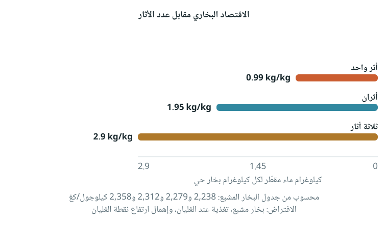

المبخّر متعدد الأثر: كيلوغرام بخار يبخّر 2.90 كيلوغرام ماء
Multi-effect evaporation: steam economy
يُمرَّر بخار كل أثر إلى أثر أبرد منه، فتعمل الحرارة الكامنة نفسها أكثر من مرة. من جدول البخار المشبع: الاقتصاد البخاري 2.90 كغ ماء لكل كغ بخار حي في ثلاثة أثار.
في مصانع السكر وتحلية المياه ومحطات التبخير، لا يُطلق بخار الأثر الأول إلى المكثّف مباشرة: يُوجَّه إلى المبادل الحراري داخل الأثر التالي، فيتكثّف هناك ويغلي محلولًا عند حرارة أدنى. الطاقة الكامنة التي حملها البخار من الغلاية تعمل مرة ثانية وثالثة قبل أن تُطرح. يُقاس هذا الأداء بالاقتصاد البخاري: كيلوغرامات الماء المتبخّرة لكل كيلوغرام بخار حي يدخل الأثر الأول، وهو رقم كتلي لا نسبة طاقة. الفرق بين أثر واحد وثلاثة أثار ليس تحسينًا هامشيًّا؛ إنه الفرق بين 1,008 كغ و345 كغ من بخار الغلاية لكل طن ماء مقطّر.
كيف تعمل الظاهرة؟
البخار الحي عند 130 كيلوباسكال يتكثّف على أنابيب الأثر الأول عند 107.1 °م، فيسلّم حرارته الكامنة إلى المحلول الذي يغلي عند 91.8 °م. البخار المتولّد في الأثر الأول يُسحب إلى أنابيب الأثر الثاني، ويتكثّف فيها عند 91.8 °م فيغلي محلول الأثر الثاني عند 78.7 °م، ثم يتكرّر ذلك في الأثر الثالث عند 60.1 °م. الشرط الفيزيائي أن يكون كل أثر أبرد من سابقه، لأن فرق الحرارة هو القوة الدافعة عبر الجدار؛ فلو تساوت الحرارتان توقّف انتقال الحرارة. البخار الأخير وحده يذهب إلى المكثّف، حيث تُطرح بقية الحرارة الكامنة إلى ماء التبريد.
العلاقة بالأرقام
الاقتصاد البخاري E هو مجموع نسب الحرارة الكامنة بين كل مكثِّف وغلاية متتاليين: كل كيلوغرام بخار يتكثّف يبخّر h_fg(المكثِّف)/h_fg(الغليان) كيلوغرامًا. من جدول البخار المشبع: 2,238/2,279 = 0.982، ثم 2,279/2,312 = 0.986، ثم 2,312/2,358 = 0.981؛ والمجموع 2.90 كغ/كغ. وفي أثر واحد: 2,238/2,257 = 0.992، أي 1,008 كغ بخار للطن. أي أن كيلوغرامًا واحدًا من بخار الغلاية عند 130 كيلوباسكال يبخّر 2.90 كيلوغرام ماء في ثلاثة أثار، فيحتاج طن الماء إلى 345 كغ بخار. وتبخير الطن عند 100 °م يحتاج 2,257 ميجاجول، أي 627 كيلوواط ساعة حرارية.
مفاهيم متقاربة
الاقتصاد البخاري ليس كفاءة حرارية: الأول نسبة كتل (كغ ماء لكل كغ بخار) ويجوز أن يتجاوز الواحد، والثانية نسبة طاقة لا تتجاوز 100%. وليس معامل أداء كما في مضخّة الحرارة، لأن مدخله بخار لا كهرباء. والمبخّر متعدد الأثر ليس أثرًا واحدًا مكرّرًا: كل أثر وعاء مستقل بمبادله وضغطه، ولهذا يزيد العدد التبخير دون عمل ضاغط، بخلاف إعادة الضغط الميكانيكي التي تشتري الحرارة بعمل ميكانيكي.
حدود التطبيق
الأرقام تفترض بخارًا مشبعًا، وتغذية عند حرارة غليان الأثر الأول، ومحلولًا بلا ارتفاع في نقطة الغليان، وإهمال التفقّد والتكاثف الفرعي. مع محلول ملحي أو سكري يرتفع فرق الحرارة المطلوب (BPE) فيقلّ الفرق المتاح في كل أثر، ويهبط الاقتصاد الفعلي تحت 2.90. والمساحة تزيد مع عدد الأثار: كل أثر ينقل جزءًا من الحرارة بجزء من الفرق الكلي، فالمبادلات تتضاعف تقريبًا ثلاث مرات في ثلاثة أثار؛ وبعد أربعة أو خمسة أثار تصبح كلفة الأوعية والمكثّفات والفراغ أكبر من وفور البخار.

| الكمية | القيمة | المصدر |
|---|---|---|
| الحرارة الكامنة لتبخير الماء عند 101.33 كيلوباسكال | 2,257 kJ/kg | [1] |
| الحرارة الكامنة عند 20 كيلوباسكال و60.1 °م | 2,358 kJ/kg | [1] |
| الحرارة الكامنة للبخار الحي عند 130 كيلوباسكال و107.1 °م | 2,238 kJ/kg | [1] |
| الاقتصاد البخاري في ثلاثة أثار (محسوب من الجدول) | 2.90 kg/kg | [1] |
| البخار الحي اللازم لتبخير طن ماء في ثلاثة أثار (محسوب) | 345 kg | [1] |
| البخار الحي اللازم لتبخير طن ماء في أثر واحد (محسوب) | 1,008 kg | [1] |
| الاقتصاد البخاري في أثر واحد (محسوب من الجدول) | 0.992 kg/kg | [1] |
| الحرارة اللازمة لتبخير طن ماء عند 100 °م (محسوبة) | 627 kWh | [2] |
المصادر
- 1 Saturated Steam Properties — SI Units (specific enthalpy of evaporation) — Engineering ToolBox. www.engineeringtoolbox.com/saturated-steam-properties-d_101.html · اطُّلع عليه 2026-11-28
- 2 College Physics 2e — Phase Change and Latent Heat — OpenStax. openstax.org/books/college-physics-2e/pages/14-3-phase-change-and-latent-heat · اطُّلع عليه 2026-11-28
راجعه: عبدالله الهويدي — قرار المالك · 2026-11-28 · آخر تحديث 2026-11-28
رجوع إلى المقالات